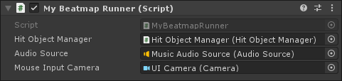
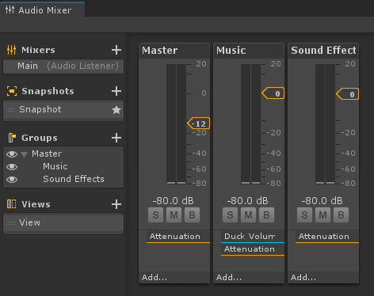
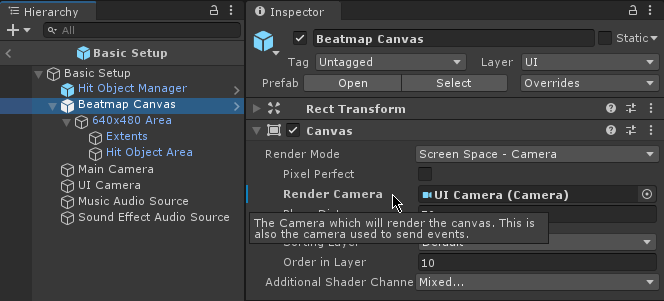
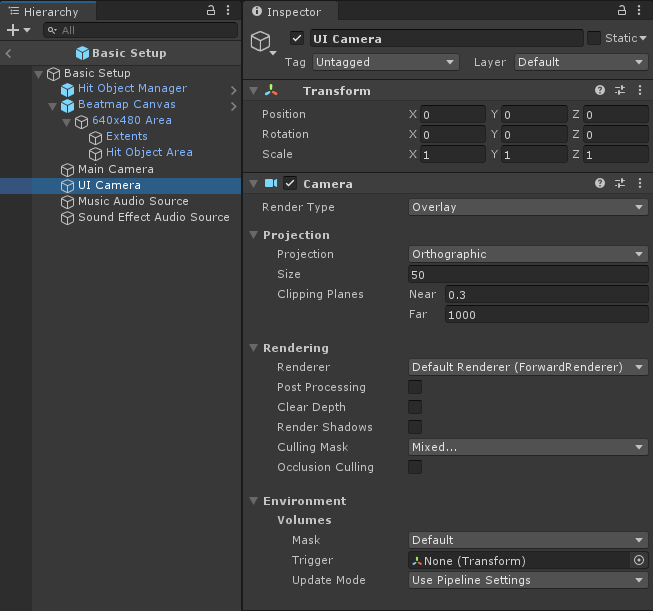

Beatmap Runner
The Beatmap Runner is the brains of MouseDance. It takes care of loading an .osu file, starting the Beatmap, and playing the song. It keeps track of the song's current playtime to figure out when to spawn new Hit Objects on screen. Since this is a MonoBehaviour, this would exist in the scene as a component inside a GameObject, most often named "Beatmap Runner" itself, to make it self-descriptive.
The BeatmapRunner requires to be assigned with three properties in the Inspector: Hit Object Manager, Audio Source, and Mouse Input Camera.

The Beatmap Runner makes use of the Hit Object Manager, which handles prefab instantiation and pooling, so that the instantiated prefabs are reused as much as possible. Hit Object Manager handles which prefab is instantiated for which type of Hit Object.
The Audio Source is needed so
BeatmapRunnercan play (and pause if necessary) the beatmap's song.This is separate from the
AudioSourcefor the sound effects, so that you can have separate volume controls for music and sounds, thanks to Audio Mixers.The demo scenes are already set up for you such that music and sounds are in separate AudioGroups.

The
Mouse Input Camerais needed soBeatmapRunnerknows where to do a raycast from, when checking which Hit Objects are under the mouse cursor.In the demo scenes, this uses the UI Camera, since all Hit Objects are rendered onto the Unity UI.

There isn't anything special about this Camera. It's the typical set up for a Camera that's used to render Unity UI, where it is stacked onto the Main Camera.

Warning
If you are using a different render pipeline you will have to set up the cameras differently. If you are using HDRP for example, then refer to the notes on HDRP Multiple camera setup.
Beatmap Runner also handles user-input. By default it is hardcoded to detect left mouse button or Z on the keyboard. It can use either the old or new Input System, whichever is available. It should be relatively easy to swap that out for however you detect user-input. You can implement IBeatmapInput, to change how it checks for user-input. The demo scene 5-Left Right Click Demo has an example of a class that customizes input (see LeftRightClickDemoMain). See Custom User-Input Detection for more info.
There are many other things in the Beatmap Runner that you can customize. Refer to the Code Usage page for more info.